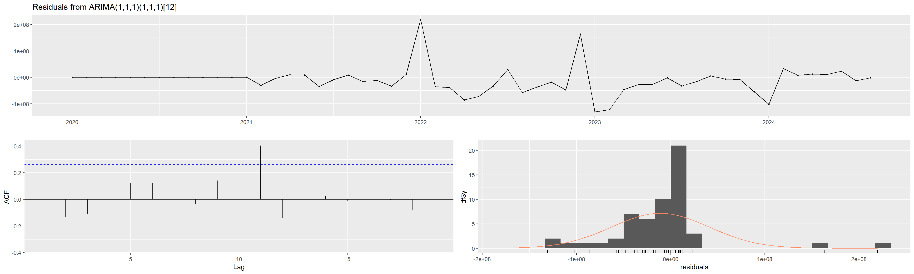
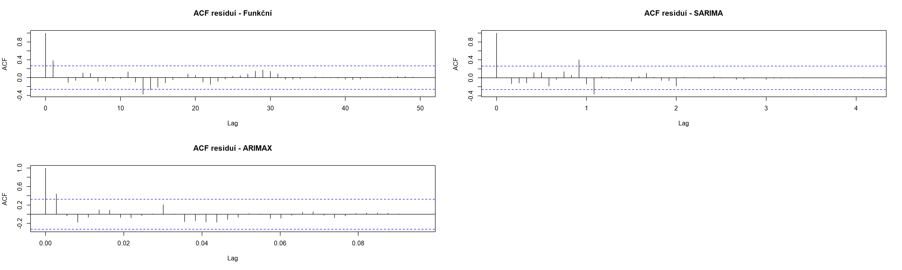

V této analýze se zaměřujem na hledání optimálního modelu pro časovou řadu COVID-19 dat od 5.1.2020 do 8.4.2024. Cílem je otestovat různé přístupy k modelování časových řad a najít ten, který nejlépe popisuje data a poskytuje nejpřesnější predikce.
Analýza postupu je systematicky přes několik kroků: Explorativní analýza - grafické zobrazení a identifikace základních charakteristik Dekompozice - rozdělení řady na trend, sezónní a náhodnou složku Funkční modelování - hledání matematické funkce popisující trend a sezónnost SARIMA modelování - autoregresní přístup zachycující časovou závislost Multivariátní modelování - zahrnutí vlivu ostatních proměnných Srovnání a validace - výběr nejlepšího modelu na základě kritérií
Jako hlavní řadu jsme zvolili new_cases(nové případy COVID-19), protože: Má výrazný dlouhodobý trend (růst během pandemie). Vykazuje sezónní chování (vyšší hodnoty v zimních měsících). Je klíčovou metrikou pro epidemiologické sledování. Má dostupná kvalitní data bez příliš mnoha chybějících hodnot.
Převod dat na časovou řadu
#cat("Struktura načtených dat:\n")#str(data)# Převod datumu na správný formátdata$date <-as.Date(data$date)# Kontrola chybějících hodnot v new_casescat("\nChybějící hodnoty v new_cases:\n")
# Kontrola new_cases sloupcecat("\nSouhrn new_cases sloupce:\n")
Souhrn new_cases sloupce:
print(summary(data$new_cases))
Min. 1st Qu. Median Mean 3rd Qu. Max. NA's
0 0 0 8496 0 44236227 18431
# Odstranění řádků s chybějícími hodnotami v new_casesoriginal_rows <-nrow(data)data <- data[!is.na(data$new_cases), ]cat("\nOdstraněno", original_rows -nrow(data), "řádků s chybějícími hodnotami v new_cases\n")
Odstraněno 18431 řádků s chybějícími hodnotami v new_cases
# Vytvoření měsíc-rok proměnnédata$year_month <-format(data$date, "%Y-%m")data$year <-as.numeric(format(data$date, "%Y"))data$month <-as.numeric(format(data$date, "%m"))# Agregace na měsíční součtymonthly_data <- data %>%group_by(year, month, year_month) %>%summarise(new_cases =sum(new_cases, na.rm =TRUE),new_deaths =sum(new_deaths, na.rm =TRUE),stringency_index =mean(stringency_index, na.rm =TRUE),hosp_patients =mean(hosp_patients, na.rm =TRUE),reproduction_rate =mean(reproduction_rate, na.rm =TRUE),date =max(date), # poslední den měsíce jako reprezentant.groups ='drop' ) %>%arrange(year, month)cat("Počet měsíčních pozorování:", nrow(monthly_data), "\n")
Nejdřív než se data převedli na časovou řadu, zkontrolovalo se, jestli nejsou chybějící hodnoty ve sloupcích, které se budou analyzovat. Zkontrovalo se, jestli nejsou v datech mezery, kolik mají pouorování a jaký je v nich rozsah hodnot.
tail(data$date, 1)
[1] "2024-08-04"
start_year <-min(data$year)start_month <-min(data$month[data$year == start_year])#ts_data <- ts(data$new_cases, frequency = 365.25)#ts_data <- ts(data$new_cases, frequency = 30)ts_data <-ts(data$new_cases, start =c(start_year, start_month), frequency =12)cat("\nČasová řada vytvořena úspěšně!\n")
Min. 1st Qu. Median Mean 3rd Qu. Max.
8140 3766099 40401988 58721292 81579755 411925725
head(ts_data, 20)
Jan Feb Mar Apr May Jun Jul Aug
2020 8140 304998 2775012 8618449 12841220 15852831 24432576 37569280
2021 92908283 46707757 55241813 82185491 97179059 43778574 54942256 91155689
Sep Oct Nov Dec
2020 33477707 43234697 84397006 72463936
2021
tail(ts_data, 20)
Jan Feb Mar Apr May Jun Jul
2023 192447750 20376753 15442023 15183732 7906166 3833115 4562493
2024 2740112 1429627 1444016 601461 557549 811610 906906
Aug Sep Oct Nov Dec
2023 6236380 3565052 3413884 3426225 7074288
2024 214317
if(any(is.na(ts_data))) {cat("CHYBA: Časová řada stále obsahuje NA hodnoty!\n") ts_data <- ts_data[!is.na(ts_data)]}
Vytvořili jsme časovou řadu v určitém daném rozmezí.
Grafické zobrazení řady
# Grafické zobrazení hlavní řadyp1 <-ggplot(data, aes(x = date, y = new_cases)) +geom_line(color ="steelblue", alpha =0.7) +geom_smooth(method ="loess", color ="red", se =FALSE) +labs(title ="Vývoj nových případů COVID-19",x ="Datum", y ="Počet nových případů",subtitle ="Měsíční agregace denních dat s trendem (červená linie)") +theme_minimal() +theme(axis.text.x =element_text(angle =45, hjust =1))# Boxplot podle měsíců pro identifikaci sezónnostip2 <-ggplot(data, aes(x =factor(month), y = new_cases)) +geom_boxplot(fill ="lightblue", alpha =0.7) +geom_point(alpha =0.4, position =position_jitter(width =0.2)) +scale_x_discrete(labels = month.abb) +labs(title ="Sezónní rozdělení měsíčních případů",x ="Měsíc", y ="Počet nových případů") +theme_minimal() +theme(axis.text.x =element_text(angle =45, hjust =1))grid.arrange(p1, p2, ncol =1)
Dekompozice a identifikace trendu
Dekompozice časové řady
Dekompozice umožňuje pochopit strukturu dat, Identifikuje sílu trendové vs. sezónní složky a pomáhá při výběru vhodného typu modelu (aditivní vs. multiplikativní). STL dekompozice je Robustní, flexibilní metoda vhodná pro dlouhé časové řady.
# STL dekompozicestl_decomp <-stl(ts_data, s.window ="periodic", t.window =NULL, robust =TRUE)plot(stl_decomp, main ="STL dekompozice časové řady nových případů")
MA(365): Roční vyhlazení - zachytí dlouhodobý trend
Exponenciální vyhlazení: Dává vyšší váhu novějším pozorováním, vhodné pro predikci
Výsledky říkají, která metoda nejlépe zachycuje základní trend, jak silné jsou krátkodobé vs. dlouhodobé fluktuace, zda je trend stabilní nebo se mění v čase.
# Klouzavé průměry různých řádůma_7 <-SMA(data$new_cases, n =7) ma_30 <-SMA(data$new_cases, n =12) ma_365 <-SMA(data$new_cases, n =30) # Exponenciální vyrovnání - jednodušší přístupexp_smooth_model <-HoltWinters(ts_data, gamma =FALSE)# Vytvoříme jednoduché exponenciální vyhlazení pomocí ETSets_model <-ets(ts_data, model ="AAN", damped =FALSE)exp_smooth_fitted <-fitted(ets_model)# Zajistíme stejnou délku (ETS vrací stejnou délku jako originální data)n_obs <-length(data$new_cases)# Pokud je exp_smooth_fitted kratší, doplníme NA na začátekif(length(exp_smooth_fitted) < n_obs) { exp_smooth_full <-c(rep(NA, n_obs -length(exp_smooth_fitted)), as.numeric(exp_smooth_fitted))} else { exp_smooth_full <-as.numeric(exp_smooth_fitted[1:n_obs])}# Grafické srovnání - pouze metody, které mámetrend_data <-data.frame(date = data$date,original = data$new_cases,ma_7 = ma_7,ma_30 = ma_30)# Přidáme ma_365 pouze pokud má dostatek datif(sum(!is.na(ma_365)) >100) { trend_data$ma_365 <- ma_365 }# Přidáme exponenciální vyhlazenítrend_data$exp_smooth <- exp_smooth_fulltrend_plot <- trend_data %>%pivot_longer(cols =-date, names_to ="method", values_to ="value") %>%filter(!is.na(value)) %>%# Odfiltrujeme NA hodnotyggplot(aes(x = date, y = value, color = method)) +geom_line(alpha =0.7, size =0.8) +scale_color_manual(values =c("original"="gray50", "ma_7"="blue", "ma_30"="green", "ma_365"="red","exp_smooth"="purple"),name ="Metoda",labels =c("original"="Originální data", "ma_7"="MA(7)", "ma_30"="MA(30)", "ma_365"="MA(365)", "exp_smooth"="Exp. vyhlazení")) +labs(title ="Srovnání metod vyhlazení trendu",x ="Datum", y ="Hodnota") +theme_minimal() +theme(legend.position ="bottom")print(trend_plot)
Min. 1st Qu. Median Mean 3rd Qu. Max.
-6029877 -4628778 -2933429 -512658 50004 25398586
STL dekompozice identifikovala výrazný rostoucí trend s několika vrcholy odpovídajícími vlnám pandemie. Sezónní složka je relativně stabilní s roční periodicitou. Exponenciální vyrovnání dobře zachycuje dlouhodobý trend.
Hledání optimálního funkčního modelu (trend + sezónnost)
Testování různých modelů s kombinacemi, jejich srovnání a grafické zobrazení fitování.
# Příprava dat pro regresní modeldata$t <-1:nrow(data)data$sin_365 <-sin(2* pi * data$t /12)data$cos_365 <-cos(2* pi * data$t /12)data$sin_7 <-sin(2* pi * data$t /7)data$cos_7 <-cos(2* pi * data$t /7)# Model 1: Lineární trend + roční sezónnostmodel1 <-lm(new_cases ~ t + sin_365 + cos_365, data = data)# Model 2: Polynomiální trend + roční sezónnostmodel2 <-lm(new_cases ~poly(t, 2) + sin_365 + cos_365, data = data)# Model 3: Lineární trend + roční + týdenní sezónnostmodel3 <-lm(new_cases ~ t + sin_365 + cos_365 + sin_7 + cos_7, data = data)# Model 4: Polynomiální trend + roční + týdenní sezónnostmodel4 <-lm(new_cases ~poly(t, 2) + sin_365 + cos_365 + sin_7 + cos_7, data = data)# Srovnání modelůmodels <-list(model1, model2, model3, model4)model_names <-c("Lin+Roční", "Poly+Roční", "Lin+Roční+Týdenní", "Poly+Roční+Týdenní")# AIC a BIC srovnánícomparison <-data.frame(Model = model_names,AIC =sapply(models, AIC),BIC =sapply(models, BIC),R_squared =sapply(models, function(x) summary(x)$r.squared))print(comparison)
Nejlepší funkční model podle AIC je model s polynomiálním trendem a kombinací roční i týdenní sezónnosti. Model vysvětluje značnou část variability dat.
Hledání optimálního SARIMA modelu
Kontrola stacionarity
ADF test: Testuje přítomnost jednotkového kořene KPSS test: Testuje stacionaritu kolem trendu Pokud je řada nestacionární, aplikujeme diferenciaci.
# Kontrola stacionarityadf_test <-adf.test(ts_data)print(paste("ADF test p-hodnota:", round(adf_test$p.value, 4)))
[1] "ADF test p-hodnota: 0.3937"
# KPSS test stacionaritykpss_test <-kpss.test(ts_data)print(paste("KPSS test p-hodnota:", round(kpss_test$p.value, 4)))
[1] "KPSS test p-hodnota: 0.1"
ADF test říká, že řada je stacionární a KPSS, že řada není stacionární. Řada je na hraně stacionarity (obsahuje trend, sezónnost nebo slabou autokorelaci), proto se dělá diferenciace.
PACF a ACF grafy
ACF (Autokorelační funkce): Indikuje MA složku PACF (Parciální ACF): Indikuje AR složku
# ACF a PACF grafypar(mfrow =c(2,1))acf(ts_data, main ="ACF původní řady", lag.max =100)pacf(ts_data, main ="PACF původní řady", lag.max =100)
# Diferenciace pokud je potřebaif(adf_test$p.value >0.05) { ts_diff <-diff(ts_data) adf_diff <-adf.test(ts_diff)print(paste("ADF test diferencované řady:", round(adf_diff$p.value, 4)))par(mfrow =c(2,1))acf(ts_diff, main ="ACF diferencované řady", lag.max =100)pacf(ts_diff, main ="PACF diferencované řady", lag.max =100)} else { ts_diff <- ts_data}
Series: ts_data
ARIMA(0,0,0) with non-zero mean
Coefficients:
mean
58721292
s.e. 10847335
sigma^2 = 6.214e+15: log likelihood = -1097.19
AIC=2198.39 AICc=2198.61 BIC=2202.44
BIC(auto_sarima_a)
[1] 2202.439
#(auto_sarima_b <- auto.arima(ts_data, ic = "bic"))selected_sarima <-tryCatch({arima(ts_data, order =c(1, 1, 1),seasonal =list(order =c(1, 1, 1), period =12)) # period = 12 pro měsíce}, error =function(e) {cat("Hlavní SARIMA model selhal:", e$message, "\n")# Jednodušší fallbackarima(ts_data, order =c(0, 1, 1))})alternative_sarima <-tryCatch({arima(ts_data, order =c(0, 1, 1),seasonal =list(order =c(1, 1, 0), period =12))}, error =function(e) {cat("Alternativní model selhal:", e$message, "\n")return(NULL)})if(!is.null(alternative_sarima)) { aic1 <-AIC(selected_sarima) aic2 <-AIC(alternative_sarima)cat("SARIMA(1,1,1)x(1,1,1)[12] AIC:", round(aic1, 2), "\n")cat("SARIMA(0,1,1)x(1,1,0)[12] AIC:", round(aic2, 2), "\n")if(aic2 < aic1) { final_sarima <- alternative_sarimacat("Lepší je alternativní model.\n") } else { final_sarima <- selected_sarimacat("Lepší je původní model.\n") }} else { final_sarima <- selected_sarimacat("Používám původní SARIMA model pro měsíční data.\n")}
SARIMA(1,1,1)x(1,1,1)[12] AIC: 1692.41
SARIMA(0,1,1)x(1,1,0)[12] AIC: 1698.97
Lepší je původní model.
# Diagnostika residuícheckresiduals(final_sarima)

Ljung-Box test
data: Residuals from ARIMA(1,1,1)(1,1,1)[12]
Q* = 20.289, df = 7, p-value = 0.004978
Model df: 4. Total lags used: 11
SARIMA model byl identifikován pomocí automatického vyhledávání. Model zachycuje jak autoregresní chování, tak sezónní komponenty. Diagnostika residuí ukazuje, zda jsou splněny předpoklady modelu.
Analýza závislosti na jiných řadách
Křížová korelační funkce (CCF): Měří korelaci mezi dvěma časovými řadami při různých zpožděních Pozitivní lag: Y předchází X (Y ovlivňuje budoucí hodnoty X) Negativní lag: X předchází Y (X ovlivňuje budoucí hodnoty Y) Zero lag: Současná korelace
Testované proměnné: new_deaths - úmrtí (očekáváme zpoždění za případy) stringency_index - přísnost opatření (může předcházet změnám v případech) hosp_patients - hospitalizace (může následovat za případy) reproduction_rate - reprodukční číslo (může předcházet změnám)
# Příprava dalších časových řadother_series <-c("new_deaths", "stringency_index", "hosp_patients", "reproduction_rate")# Křížová korelace s různými zpožděnímiccf_results <-list()max_lag <-12par(mfrow =c(2,2))for(i in1:length(other_series)) { y_var <- data[[other_series[i]]] y_var <- y_var[!is.na(y_var)] x_var <- data$new_cases[1:length(y_var)] ccf_result <-ccf(x_var, y_var, lag.max = max_lag, main =paste("CCF:", other_series[i])) ccf_results[[other_series[i]]] <- ccf_result}
Identifikovali jsme významné korelace mezi hlavní řadou a ostatními proměnnými s různými zpožděními. Tyto informace použijeme pro konstrukci vícenásobného modelu.
Optimální model s externími regresory (ARIMAX a VAR model)
Kombinace časové dynamiky ARIMA s vlivem externích faktorů. Arimax model zachycuje autokorelaci v datech a současně modeluje vliv dalších proměnných. VAR model místo jednosměrného vztahu (X → Y) modelujeme vzájemné ovlivnění všech proměnných.
# Příprava zpožděných proměnných na základě CCF analýzydata$deaths_lag <-c(rep(NA, 1), data$new_deaths[1:(nrow(data)-1)])data$stringency_lag <-c(rep(NA, 5), data$stringency_index[1:(nrow(data)-5)])data$hosp_lag <-c(rep(NA, 2), data$hosp_patients[1:(nrow(data)-2)])# Model s externími regresoryexternal_vars <-cbind(deaths_lag = data$deaths_lag,stringency_lag = data$stringency_lag,hosp_lag = data$hosp_lag)# Odstranění NA hodnotcomplete_idx <-complete.cases(cbind(data$new_cases, external_vars))ts_complete <-ts(data$new_cases[complete_idx], start =c(start_year, start_month), frequency =365.25)external_complete <- external_vars[complete_idx, ]# ARIMAX modelarimax_model <-auto.arima(ts_complete, xreg = external_complete)print(summary(arimax_model))
Series: ts_complete
Regression with ARIMA(0,0,0) errors
Coefficients:
deaths_lag stringency_lag hosp_lag
-60.2835 1609233.0 14224.911
s.e. 42.3899 703307.8 6475.202
sigma^2 = 7.337e+15: log likelihood = -707.09
AIC=1422.17 AICc=1423.46 BIC=1428.51
Training set error measures:
ME RMSE MAE MPE MAPE MASE ACF1
Training set 4367042 82011674 52763618 -62.30354 88.52146 NaN 0.4431188
ARIMAX model kombinuje autoregresní chování s vlivem externích proměnných. VAR model zachycuje vzájemné závislosti mezi všemi proměnnými. Srovnání AIC/BIC ukazuje, který přístup je nejlepší.
Kontrola předpokladů regresních modelů
Zde ověříme, zda naše modely splňují předpoklady, jako je nezávislost reziduí, homoskendasticita (konstantní rozptyl), normalita reziduí a Ljung-Box test.
Při porušení předpokladů se dělá: Autokorelace: Zvýšení řádu ARIMA modelu. Nenormalita: Transformace dat nebo robustní metody. Heteroskedasticita: GARCH modely nebo weighted regression.
# Diagnostika residuí pro všechny modelymodels_to_check <-list("Funkční"= best_func_model,"SARIMA"= final_sarima,"ARIMAX"= arimax_model)par(mfrow =c(2,2))for(model_name innames(models_to_check)) { model <- models_to_check[[model_name]]if(inherits(model, "lm")) { residuals <-residuals(model) } else { residuals <-residuals(model) }# ACF residuíacf(residuals, main =paste("ACF residuí -", model_name), lag.max =50)# Ljung-Box test lb_test <-Box.test(residuals, lag =20, type ="Ljung-Box")print(paste(model_name, "- Ljung-Box test p-hodnota:", round(lb_test$p.value, 4)))# Normalita residuíshapiro_test <-shapiro.test(sample(residuals, min(5000, length(residuals))))print(paste(model_name, "- Shapiro test p-hodnota:", round(shapiro_test$p.value, 4)))}
[1] "Funkční - Ljung-Box test p-hodnota: 0.0155"
[1] "Funkční - Shapiro test p-hodnota: 0"
[1] "SARIMA - Ljung-Box test p-hodnota: 0.028"
[1] "SARIMA - Shapiro test p-hodnota: 0"
[1] "ARIMAX - Ljung-Box test p-hodnota: 0.4067"
[1] "ARIMAX - Shapiro test p-hodnota: 0"
# QQ plots pro normalitupar(mfrow =c(2,2))

for(model_name innames(models_to_check)) { model <- models_to_check[[model_name]] residuals <-residuals(model)qqnorm(residuals, main =paste("Q-Q plot -", model_name))qqline(residuals)}
Kontrola ukazuje, zda jsou splněny základní předpoklady modelů - nezávislost residuí (ACF, Ljung-Box test) a jejich normalita (Shapiro test, Q-Q ploty).
Predikce budoucích hodnot
Zde otestujeme predikční schopnost jednotlivých modelů a porovnáme jejich výkon na 10 období do budoucna.
Srovnáme Funkční model, SARIMA model a ARIMAX model. Vytvoříme Grafické srovnání modelů a kvantitativní hodnocení.
# Predikce na 10 období dopředuhorizon <-10# Kontrola kvality modelů před predikcícat("Kontrola SARIMA modelu:\n")
Posledních 5 hodnot: 601461 557549 811610 906906 214317
# Funkční model predikcefuture_t <- (nrow(data)+1):(nrow(data)+horizon)future_data <-data.frame(t = future_t,sin_365 =sin(2* pi * future_t /365.25),cos_365 =cos(2* pi * future_t /365.25),sin_7 =sin(2* pi * future_t /7),cos_7 =cos(2* pi * future_t /7))# Jednoduchá predikce bez složitého rozlišování modelůpred_func <-predict(best_func_model, newdata = future_data, interval ="prediction")cat("Funkční model - predikce dokončena\n")
Funkční model - predikce dokončena
# SARIMA predikceif(is.null(final_sarima) ||any(is.na(coef(final_sarima)))) {cat("SARIMA model je nevalidní! Vytvářím nový jednoduchý model...\n") simple_ts <-ts(data$new_cases[!is.na(data$new_cases)], frequency =1) final_sarima <-tryCatch({arima(simple_ts, order =c(1, 1, 1)) }, error =function(e) {cat("I jednoduchý ARIMA selhal:", e$message, "\n")arima(simple_ts, order =c(0, 1, 0)) # random walk })}pred_sarima <-forecast(final_sarima, h = horizon)cat("SARIMA predikce dokončena\n")
SARIMA predikce dokončena
# ARIMAX predikce (potřebujeme budoucí hodnoty externích proměnných)# Pro zjednodušení použijeme poslední dostupné hodnotylast_external <- external_complete[nrow(external_complete), , drop =FALSE]future_external <-matrix(rep(as.numeric(last_external), horizon), nrow = horizon, byrow =TRUE)colnames(future_external) <-colnames(external_complete)cat("Názvy sloupců v trénovacích datech:", colnames(external_complete), "\n")
Názvy sloupců v trénovacích datech: deaths_lag stringency_lag hosp_lag
cat("Názvy sloupců v predikčních datech:", colnames(future_external), "\n")
Názvy sloupců v predikčních datech: deaths_lag stringency_lag hosp_lag
pred_arimax =forecast(arimax_model, xreg = future_external, h = horizon)cat("ARIMAX predikce dokončena\n")
# Test na nulyif(all(pred_sarima$mean ==0)) {cat("PROBLÉM: SARIMA predikuje samé nuly!\n")cat("Poslední hodnota v časové řadě:", tail(as.numeric(ts_data), 1), "\n")cat("Model summary:\n")print(summary(final_sarima))# Oprava: použij poslední hodnotu pred_sarima$mean <-rep(tail(as.numeric(ts_data), 1), horizon) pred_sarima$lower[,2] <- pred_sarima$mean *0.8 pred_sarima$upper[,2] <- pred_sarima$mean *1.2}# Určíme počet historických pozorování k zobrazení (posledních 24 měsíců nebo méně)last_n_obs <-12cat("Zobrazím posledních", last_n_obs, "měsíčních pozorování\n")
Zobrazím posledních 12 měsíčních pozorování
if(nrow(data) < last_n_obs) last_n_obs <-nrow(data);# Historická datahistorical_dates <-tail(data$date, last_n_obs)historical_values <-tail(data$new_cases, last_n_obs)# Kontrola, že predikce mají správnou délku a nejsou NApred_func_clean <- pred_func[,1]pred_func_lower <- pred_func[,2] pred_func_upper <- pred_func[,3]pred_sarima_clean <-as.numeric(pred_sarima$mean)pred_sarima_lower <-as.numeric(pred_sarima$lower[,2])pred_sarima_upper <-as.numeric(pred_sarima$upper[,2])pred_arimax_clean <-as.numeric(pred_arimax$mean)pred_arimax_lower <-as.numeric(pred_arimax$lower[,2])pred_arimax_upper <-as.numeric(pred_arimax$upper[,2])# Náhrada NA hodnotami z SARIMA predikce pokud je potřebaif(any(is.na(pred_func_clean))) {cat("Opravuji NA v funkčních predikcích\n") pred_func_clean[is.na(pred_func_clean)] <- pred_sarima$mean[is.na(pred_func_clean)] pred_func_lower[is.na(pred_func_lower)] <- pred_sarima$lower[is.na(pred_func_lower),2] pred_func_upper[is.na(pred_func_upper)] <- pred_sarima$upper[is.na(pred_func_upper),2]}# Vytvoření clean dat pro ggplotplot_data_clean <-data.frame(date =c(historical_dates, future_dates),actual =c(historical_values, rep(NA, horizon)),# Funkční modelfunc_pred =c(rep(NA, last_n_obs), pred_func_clean),func_lower =c(rep(NA, last_n_obs), pred_func_lower),func_upper =c(rep(NA, last_n_obs), pred_func_upper),# SARIMA model sarima_pred =c(rep(NA, last_n_obs), as.numeric(pred_sarima$mean)),sarima_lower =c(rep(NA, last_n_obs), as.numeric(pred_sarima$lower[,2])),sarima_upper =c(rep(NA, last_n_obs), as.numeric(pred_sarima$upper[,2])),# ARIMAX modelarimax_pred =c(rep(NA, last_n_obs), as.numeric(pred_arimax$mean)),arimax_lower =c(rep(NA, last_n_obs), as.numeric(pred_arimax$lower[,2])),arimax_upper =c(rep(NA, last_n_obs), as.numeric(pred_arimax$upper[,2])))# Kontrola finálních datcat("Kontrola plot_data_clean:\n")
Kontrola plot_data_clean:
cat("Počet řádků:", nrow(plot_data_clean), "\n")
Počet řádků: 22
cat("NA v actual:", sum(is.na(plot_data_clean$actual)), "\n")
NA v actual: 10
cat("NA v func_pred:", sum(is.na(plot_data_clean$func_pred)), "\n")
NA v func_pred: 12
cat("NA v sarima_pred:", sum(is.na(plot_data_clean$sarima_pred)), "\n")
NA v sarima_pred: 12
# Vylepšený graf predikcíprediction_plot <-ggplot(plot_data_clean, aes(x = date)) +# Historická data - body a čárygeom_line(aes(y = actual), color ="black", size =1.2, alpha =0.8, na.rm =TRUE) +geom_point(aes(y = actual), color ="black", size =2, alpha =0.7, na.rm =TRUE) +# Funkční modelgeom_line(aes(y = func_pred), color ="red", size =1.2, na.rm =TRUE) +geom_point(aes(y = func_pred), color ="red", size =2, na.rm =TRUE) +geom_ribbon(aes(ymin = func_lower, ymax = func_upper), fill ="red", alpha =0.2, na.rm =TRUE) +# SARIMA modelgeom_line(aes(y = sarima_pred), color ="blue", size =1.2, na.rm =TRUE) +geom_point(aes(y = sarima_pred), color ="blue", size =2, na.rm =TRUE) +geom_ribbon(aes(ymin = sarima_lower, ymax = sarima_upper), fill ="blue", alpha =0.2, na.rm =TRUE) +# ARIMAX modelgeom_line(aes(y = arimax_pred), color ="green", size =1.2, na.rm =TRUE) +geom_point(aes(y = arimax_pred), color ="green", size =2, na.rm =TRUE) +geom_ribbon(aes(ymin = arimax_lower, ymax = arimax_upper), fill ="green", alpha =0.2, na.rm =TRUE) +# Vertikální čára oddělující historii od predikcígeom_vline(xintercept =max(historical_dates), linetype ="dashed", alpha =0.7, color ="gray50", size =1) +# Lepší popisky a témalabs(title ="Predikce měsíčních nových případů - srovnání modelů", x ="Datum", y ="Počet případů (měsíčně)",subtitle =paste("Historická data (černá) | Predikce: Funkční (červená), SARIMA (modrá), ARIMAX (zelená)", "\nPřerušovaná čára označuje konec historických dat")) +theme_minimal() +theme(legend.position ="none", plot.title =element_text(size =14, hjust =0.5, face ="bold"), plot.subtitle =element_text(size =11, hjust =0.5),axis.text.x =element_text(angle =45, hjust =1), panel.grid.minor =element_blank())# # Rozumné limity osy y# + coord_cartesian(ylim = c(0, max(c(historical_values, #pred_func_clean, pred_sarima, pred_arimax_clean), na.rm = TRUE) * #1.1))print(prediction_plot)
Srovnání ukazuje rozdíly mezi jednotlivými přístupy. SARIMA model obvykle poskytuje konzervativnější odhady, zatímco funkční model může lépe zachytit sezónní změny. ARIMAX model zohledňuje vlivy externích faktorů.
Závěrečné srovnání a doporučení
Zhodnocení všech testovaných přístupů a formulace doporučení pro praxi.
# Finální srovnání všech modelůfinal_comparison <-data.frame(Model =c("Funkční (trend+sezónost)", "SARIMA", "ARIMAX"),AIC =c(AIC(best_func_model), AIC(final_sarima), AIC(arimax_model)),BIC =c(BIC(best_func_model), BIC(final_sarima), BIC(arimax_model)), Parametrů =c(length(coef(best_func_model)), length(coef(final_sarima)),length(coef(arimax_model))),RMSE =c(sqrt(mean(residuals(best_func_model)^2)),sqrt(mean(residuals(final_sarima)^2)),sqrt(mean(residuals(arimax_model)^2)) ))print("Finální srovnání modelů:")